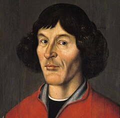

Mikołaj Kopernik |
||
NAWIGACJA |
550. rocznica urodzin Mikołaja Kopernika, (1473-1543) - 19 lutego.Był wszechstronnie wykształconym naukowcem, wybitnym reprezentantem epoki renesansu. Studiował nauki matematycznoprzyrodnicze, następnie prawo kanoniczne i medycynę. Uzyskał doktorat z prawa kanonicznego na uniwersytecie w Ferrarze. We Włoszech doskonalił znajomość języków klasycznych, łumaczył z greki na łacinę dzieło Teofilakta Symokatty „Epistolae morales, rurales et amatoriae”. Po powrocie do Polski w 1503 r. następne 40 lat życia spędził przeważnie na Warmii; w Lidzbarku Warmińskim, jako sekretarz i medyk biskupa Watzenrodego, a po jego śmierci – jako kanonik przy katedrze we Fromborku. Właśnie tam przeprowadził znaczną część spośród 60 zarejestrowanych obserwacji astronomicznych. Był lekarzem, kartografem. Interesował się zagadnieniami ekonomicznymi, czego wynikiem był jego projekt reformy walutowej. Sformułował prawo ekonomiczne, zgodnie z którym pieniądz gorszy wypiera pieniądz lepszy (nazwane później prawem Greshama). Mikołaj Kopernik najbardziej jest znany jako astronom – twórca heliocentrycznego modelu Układu Słonecznego. Główne jego dzieło „De revolutionibus orbium coelestium” („O obrotach sfer niebieskich”) powstało w latach 1515–30, które dokonało rewolucji w światowej nauce, zwanej przewrotem kopernikańskim. |

Mikołaj Kopernik |
|
||